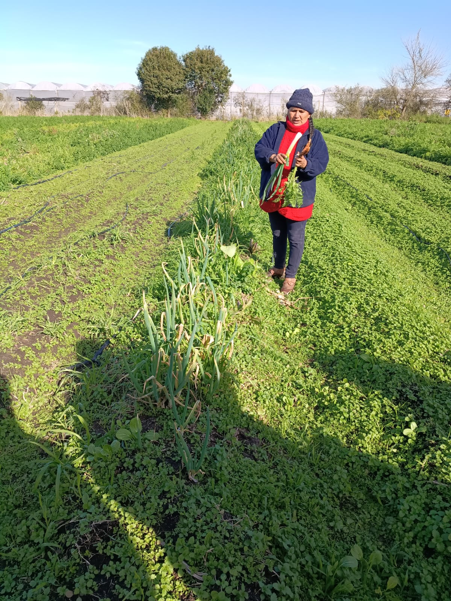

INMERSIÓN A LA REALIDAD SOCIAL AGRARIA
Una quinta.
Muchos saberes.
Un espacio para estudiar el caso CoTePo desde la mirada de quienes producen. Territorio, trabajo y organización, conectados en una misma guía.
Empezar a estudiar ↗10 ejes de estudio · Fotografías del trabajo · Repaso interactivo

TERRITORIO ✦ PRODUCCIÓN ✦ ORGANIZACIÓN ✦ COMUNIDAD
TU CUADERNO DE ESTUDIO / SOLO COTEPO
Del concepto a la quinta.
La guía completa conserva sus contenidos,
sus fotografías y sus actividades.
PARA ESTUDIAR JUNTOS
Aprender también es
una construcción colectiva.
Relacioná las ideas, conversá las respuestas con tus compañeros y volvé a la guía cuando lo necesites.
Ponerme a prueba ↗